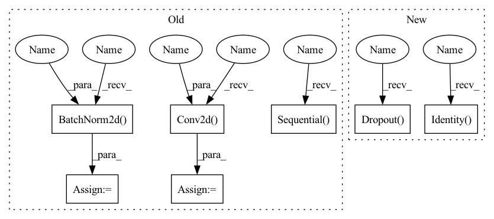

Pattern ID :785

Before Change
def __init__(self, in_planes, planes, stride=1):
super(Bottleneck, self).__init__()
self.conv1 = nn.Conv2d(in_planes, planes, kernel_size=1, bias=False)
self.bn1 = nn.BatchNorm2d(planes)
self.conv2 = nn.Conv2d(planes, planes, kernel_size=3, stride=stride, padding=1, bias=False)
self.bn2 = nn.BatchNorm2d(planes)
self.conv3 = nn.Conv2d(planes, self.expansion*planes, kernel_size=1, bias=False)
self.bn3 = nn.BatchNorm2d(self.expansion*planes)
self.shortcut = nn.Sequential()
if stride != 1 or in_planes != self.expansion*planes:
self.shortcut = nn.Sequential(
nn.Conv2d(in_planes, self.expansion*planes, kernel_size=1, stride=stride, bias=False),
nn.BatchNorm2d(self.expansion*planes)
After Change
self.transformer = Transformer(dim, depth, heads, mlp_dim, dropout)
self.to_cls_token = nn.Identity()
self.mlp_head = nn.Sequential(
nn.LayerNorm(dim),
nn.Linear(dim, mlp_dim),
nn.GELU(),
nn.Dropout(dropout),
nn.Linear(mlp_dim, num_classes)
)
In pattern: SUPERPATTERN
Frequency: 3
Non-data size: 7
Instances
Fragment ID: 1793336
Project Name: cydia2018/vit-cifar10-pruning
Commit Name: 670fb581b519a0875681d2fbf4c4ec824e7fd9a3
Time: 2020-10-27
Author: meathouse47@gmail.com
File Name: models/vit.py
Class Name: Bottleneck
Method Name: __init__
Parent Class: nn.Module
Fragment ID: 1793341
Project Name: janspiry/image-super-resolution-via-iterative-refinement
Commit Name: 12c2447fe9d989a51a1674b23fbb225c783186e5
Time: 2021-08-03
Author: lw_jiang@foxmail.com
File Name: model/modules/unet.py
Class Name: ResBlockDis
Method Name: __init__
Parent Class: nn.Module
Fragment ID: 1793330
Project Name: cydia2018/vit-cifar10-pruning
Commit Name: 670fb581b519a0875681d2fbf4c4ec824e7fd9a3
Time: 2020-10-27
Author: meathouse47@gmail.com
File Name: models/vit.py
Class Name: Bottleneck
Method Name: __init__
Parent Class: nn.Module
Fragment ID: 1793349
Project Name: janspiry/image-super-resolution-via-iterative-refinement
Commit Name: e4bf6add27ee36067514a0b3debcd3bf98dbaa17
Time: 2021-08-03
Author: jiangliangwei@tetras.com
File Name: model/modules/unet.py
Class Name: ResBlockDis
Method Name: __init__
Parent Class: nn.Module